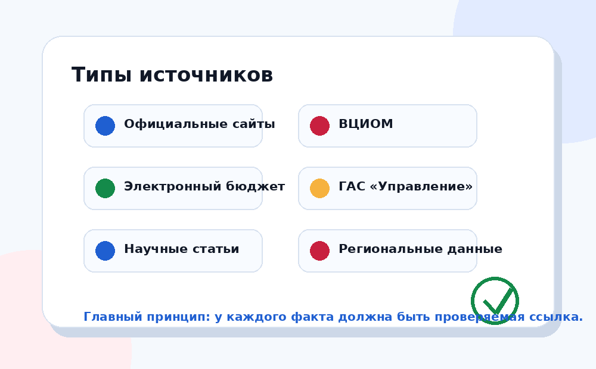

Раздел помогает перейти к первичным материалам: официальным сайтам, ВЦИОМ, бюджетным ресурсам и аналитике.

| Тип | Источник | Для чего нужен |
|---|---|---|
| Официальная структура | Национальные проекты России | Перечень проектов, описания, направления 2025–2030. |
| Правительство РФ | Раздел о национальных проектах | Официальные материалы и решения по национальным проектам. |
| Социология | ВЦИОМ: Национальные проекты — 2024 | Данные об узнаваемости проектов и мер среди граждан. |
| Бюджет | Электронный бюджет | Бюджетные данные, документы, исполнение. |
| Мониторинг | ГАС «Управление» | Информационно-аналитическая система мониторинга управленческих данных. |
| Минфин | Минфин: Электронный бюджет | Описание системы прозрачности, открытости и подотчётности. |
Национальные проекты часто обсуждают в новостях и социальных сетях, но проверять данные лучше через официальные сайты, бюджетные системы, социологию и исследовательские материалы.